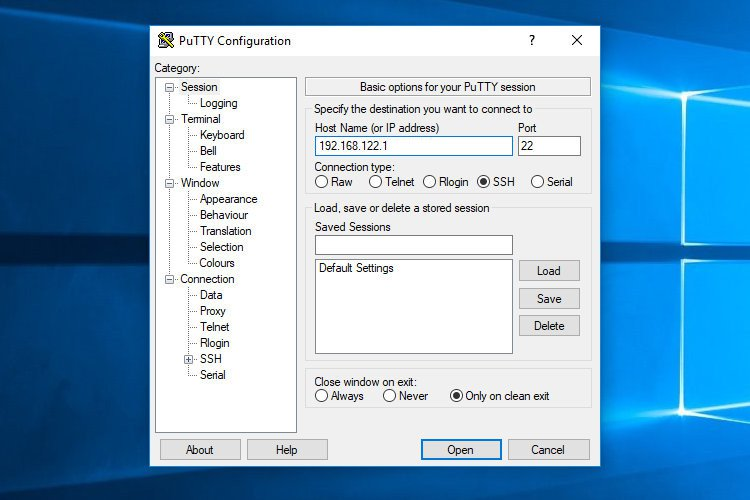
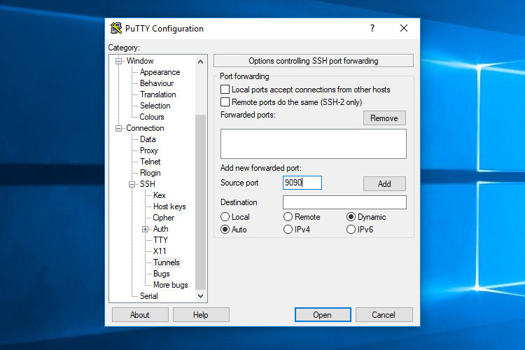
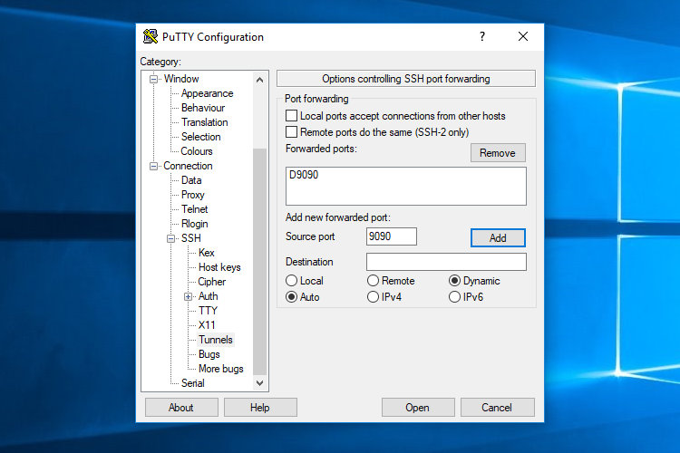
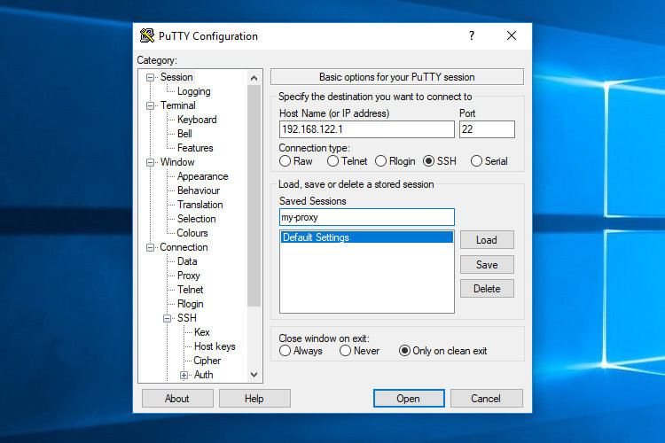
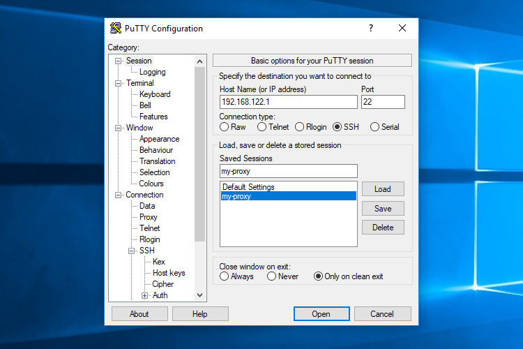

如何设置 SSH 隧道(端口转发)
SSH 隧道或 SSH 端口转发是一种在客户端和服务器机器之间创建加密 SSH 连接的方法。
SSH 转发对于传输使用未加密协议(如 VNC 或 FTP)，访问地理限制内容或绕过中间防火墙的服务的网络数据非常有用。基本上，您可以转发任何 TCP 端口并通过安全的 SSH 连接隧道传输流量。
SSH 端口转发有三种类型：
- 本地端口转发。 - 将连接从客户端主机转发到 SSH 服务器主机，然后转发到目标主机端口。
- 远程端口转发。 - 将端口从服务器主机转发到客户端主机，然后转发到目标主机端口。
- 动态端口转发。 - 创建 SOCKS 代理服务器，允许跨一系列端口进行通信。
在本文中，我们将讨论如何设置本地，远程和动态加密的 SSH 隧道。
本地端口转发
本地端口转发允许您将本地 (ssh 客户端)计算机上的端口转发到远程 (ssh 服务器)计算机上的端口，然后将其转发到目标计算机上的端口。
在这种类型的转发中， SSH 客户端侦听给定端口，并将与该端口的任何连接隧道连接到远程 SSH 服务器上的指定端口，然后该端口连接到目标计算机上的端口。目标计算机可以是远程 SSH 服务器或任何其他计算机。
本地端口转发主要用于连接内部网络(如数据库或 VNC 服务器)上的远程服务。
在 Linux ， macOS 和其他 Unix 系统中创建本地端口转发将 -L 选项传递给 ssh 客户端：
ssh -L [LOCAL_IP:]LOCAL_PORT:DESTINATION:DESTINATION_PORT [USER@]SSH_SERVER使用的选项如下：
[LOCAL_IP:]LOCAL_PORT- 本地机器的 ip 和端口号。当LOCAL_IP省略 SSH 客户端会连接本地主机。DESTINATION:DESTINATION_PORT- 目标计算机的 IP 或主机名和端口。[USER@]SERVER_IP- 远程 SSH 用户和服务器 IP 地址。
LOCAL_PORT 可以使用任何大于 1024 的端口号。端口号小于 1024 特权端口，只能由 root 用户使用。如果您的 SSH 服务器正在侦听 22 以外的端口(默认值)，请使用该 -p [PORT_NUMBER] 选项。
目标主机名必须可从 SSH 服务器解析。
假设您在内部(专用)网络上的计算机 db001.host 上运行 MySQL 数据库服务器，在端口 3306 上可以从计算机访问，并且您希望使用本地计算机 pub001.host 上的 mysql 客户端连接到数据库服务器。为此，您可以转发连接，如下所示：
ssh -L 3336:db001.host:3306 user@pub001.host运行该命令后，系统将提示您输入远程 SSH 用户密码。输入后，您将登录远程服务器并建立 SSH 隧道。建立基于 SSH 密钥的身份验证连接到服务器而不输入密码是更好的选择。
现在，如果您将本地计算机数据库客户端指向 127.0.0.1:3336 ，则连接将 db001.host:3306 通过 pub001.host 将充当中间服务器的计算机转发到 MySQL 服务器。
您可以在单个 ssh 命令中将多个端口转发到多个目标。例如，您在计算机上运行另一个 MySQL 数据库服务器， db002.host 并且您希望从您将运行的本地客户端连接到两个服务器：
ssh -L 3336:db001.host:3306 3337:db002.host:3306 user@pub001.host要连接到您将使用的第二台服务器 127.0.0.1:3337 。
目标主机与 SSH 服务器相同时，而不是指定可以使用的目标主机 IP 或主机名 localhost 。
假设您需要通过在同一服务器上运行的 VNC 连接到远程计算机，并且无法从外部访问它。您将使用的命令是：
ssh -L 5901:127.0.0.1:5901 -N -f user@remote.host该 -f 选项告诉 ssh 命令在后台运行而 -N 不是执行远程命令。我们正在使用， localhost 因为 VNC 和 SSH 服务器在同一主机上运行。
如果您在设置隧道时遇到问题，请检查远程 SSH 服务器配置并确保 AllowTcpForwarding 未设置为 no 。默认情况下，允许转发。
远程端口转发
远程端口转发与本地端口转发相反。它允许您将远程 (ssh 服务器)计算机上的端口转发到本地 (ssh 客户端)计算机上的端口，然后将其转发到目标计算机上的端口。
在这种类型的转发中， SSH 服务器侦听给定端口，并将与该端口的任何连接隧道连接到本地 SSH 客户端上的指定端口，然后该端口连接到目标计算机上的端口。目标计算机可以是本地计算机或任何其他计算机。
在 Linux ， macOS 和其他 Unix 系统中创建远程端口转发将 -R 选项传递给 ssh 客户端：
ssh -R [REMOTE:]REMOTE_PORT:DESTINATION:DESTINATION_PORT [USER@]SSH_SERVER使用的选项如下：
[REMOTE:]REMOTE_PORT- 远程 SSH 服务器上的 IP 和端口号。空REMOTE表示远程 SSH 服务器将在所有接口上绑定。DESTINATION:DESTINATION_PORT- 目标计算机的 IP 或主机名和端口。[USER@]SERVER_IP- 远程 SSH 用户和服务器 IP 地址。
本地端口转发主要用于从外部向某人提供对内部服务的访问。
假设您正在本地计算机上开发 Web 应用程序，并且希望向其他开发人员显示预览。您没有公共 IP ，因此其他开发人员无法通过 Internet 访问该应用程序。
如果您可以访问远程 SSH 服务器，则可以按如下方式设置远程端口转发：
ssh -L 8080:127.0.0.1:3000 -N -f user@remote.host上面的命令将使 ssh 服务器侦听端口 8080 并将从该端口到端口的本地计算机的所有流量隧道传输 3000 。
现在您的开发人员可以输入 the_ssh_server_ip:8080 他/她的浏览器并预览您的应用程序。
如果您有麻烦设置远程端口转发，确保 GatewayPorts 被设置为 yes 在远程 SSH 服务器配置。
动态端口转发
动态端口转发允许您在充当 SOCKS 代理服务器的本地 (ssh 客户端)计算机上创建套接字。当客户端连接到此端口时，连接将转发到远程 (ssh 服务器)计算机，然后将其转发到目标计算机上的动态端口。
这样，使用 SOCKS 代理的所有应用程序将连接到 SSH 服务器，服务器将所有流量转发到其实际目的地。
在 Linux ， macOS 和其他 Unix 系统中创建动态端口转发 (SOCKS) 将 -D 选项传递给 ssh 客户端：
ssh -R [LOCAL_IP:]LOCAL_PORT [USER@]SSH_SERVER使用的选项如下：
[LOCAL_IP:]LOCAL_PORT- 本地机器的 ip 和端口号。当LOCAL_IP省略 SSH 客户端结合在本地主机。[USER@]SERVER_IP- 远程 SSH 用户和服务器 IP 地址。
动态端口转发的典型示例是通过 SSH 服务器隧道传输 Web 浏览器流量。
以下命令将在端口上创建 SOCKS 隧道 9090 ：
ssh -D 9090 -N -f user@remote.host建立隧道后，您可以配置应用程序以使用它。本文介绍如何配置 Firefox 和 Google Chrome 浏览器以使用 SOCKS 代理。
必须为要对其进行隧道传输的每个应用程序单独配置端口转发。
在 Windows 中设置 SSH 隧道
Windows 用户可以使用 PuTTY SSH 客户端创建 SSH 隧道。你可以在这里下载 PuTTY 。
启动 Putty 并在
Host name (or IP address)字段中输入 SSH 服务器 IP 地址。 在
Connection菜单下，展开SSH并选择Tunnels。检查Local单选按钮以设置本地，Remote远程和Dynamic动态端口转发。- 如果设置本地转发，请在该
Source Port字段中Destination输入本地转发端口，然后输入目标主机和 IP ，例如localhost:5901。 - 对于远程端口转发，请在该
Source Port字段中Destination输入远程 SSH 服务器转发端口，然后输入目标主机和 IP ，例如localhost:3000。 - 如果设置动态转发，则仅输入
Source Port字段中的本地 SOCKS 端口。
 - 如果设置本地转发，请在该
单击
Add按钮，如下图所示。 返回
Session页面以保存设置，这样您每次都不需要输入它们。在Saved Session字段中输入会话名称，然后单击Save按钮。 选择已保存的会话，然后单击
Open按钮登录远程服务器。 将显示一个询问您的用户名和密码的新窗口。输入用户名和密码后，您将登录到服务器并启动 SSH 隧道。
设置公钥验证将允许您在不输入密码的情况下连接到服务器。
结论
我们已经向您展示了如何设置 SSH 隧道并通过安全的 SSH 连接转发流量。为了便于使用，您可以在 SSH 配置文件中定义 SSH 隧道，或创建将设置 SSH 隧道的 Bash 别名。